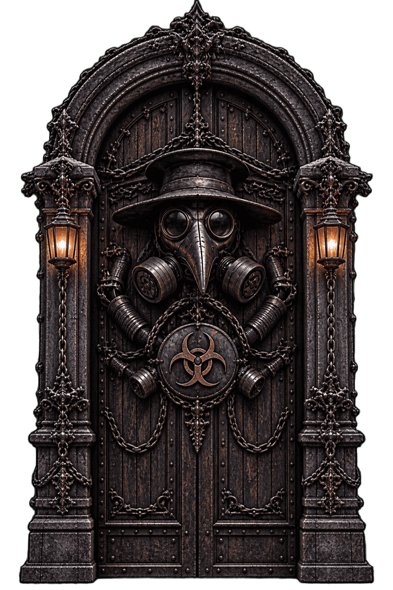
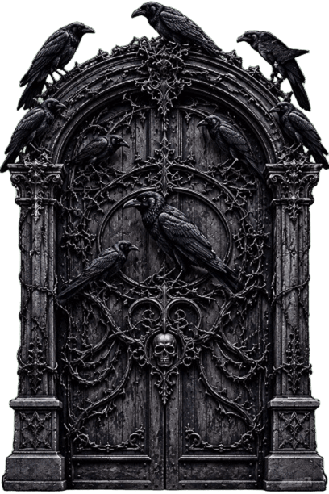
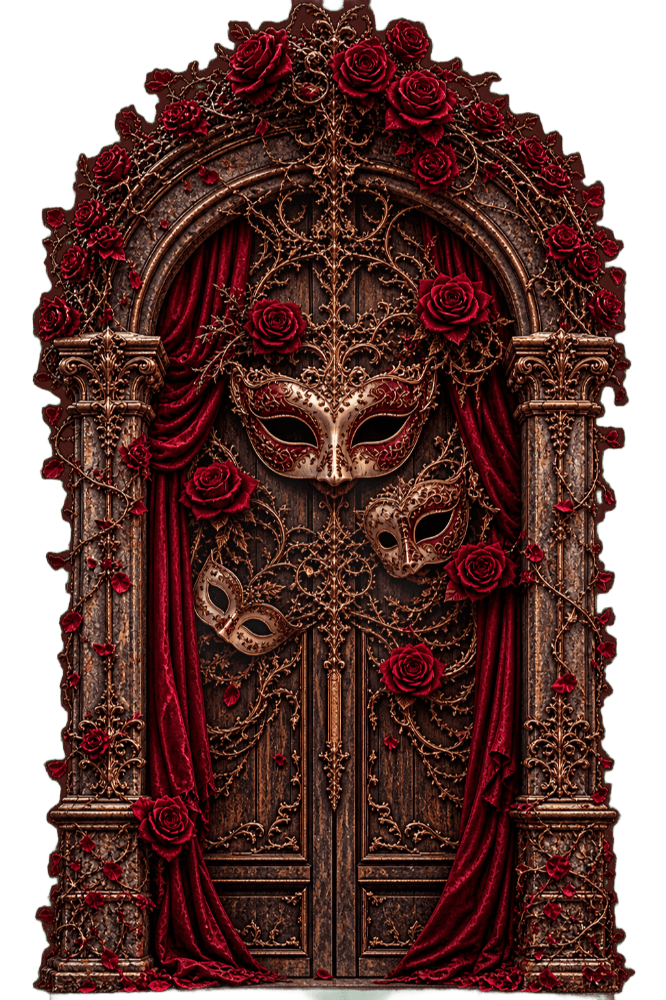

Choisis ton monde
Choisissez votre monde avec soin. Le destin ne connaît aucun chemin de retour.
-

Bienvenue à Sombreval La peste approche -

Salem Salem là ou les corbeaux observent -

Serenissime.Derrière le masque